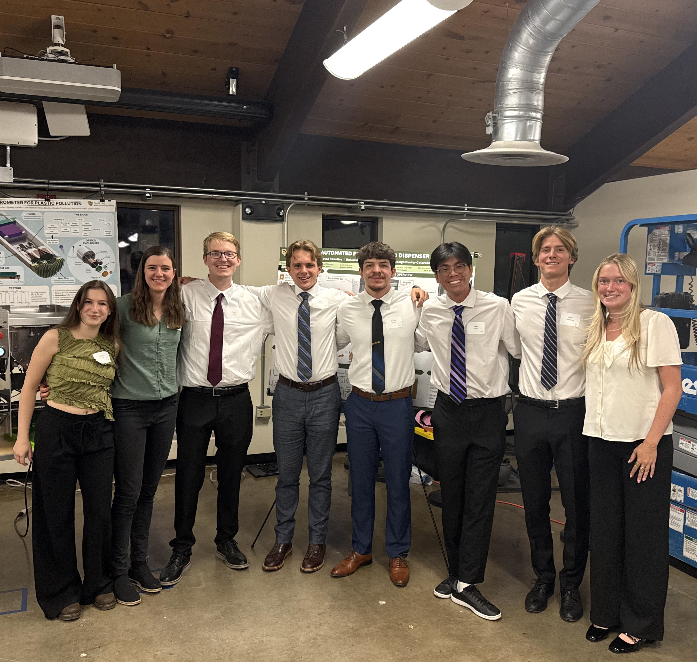

Automated Precision Seed Dispensing System
Overview
Rooted Robotics builds compact automation tools for small-scale indoor farms. Their existing microgreens seeder couldn't handle crops like lettuce, basil, or tree seedlings. Those require a single seed placed precisely in the center of each soil cell. Our team of eight engineers designed, built, and delivered a fully modular precision seeding system that integrates with Rooted Robotics' existing conveyor infrastructure and targets a bill of materials under $5,000.
The system uses a motor-driven rotating shaft fitted with an interchangeable resin-printed sleeve. Seeds load from the hopper into individual pockets in the resin-printed sleeve, and as the sleeve rotates, each pocket drops a single seed into one cell of the tray below until every cell is filled.
My Role
I served as the team's CAD engineer, responsible for the majority of the mechanical design from individual parts through complete assemblies and the final drawing package. This included the rotating shaft assembly, sliding hopper, and sheet metal frame. Every part was modeled in SolidWorks, with tolerances and manufacturing method considered at each step to keep the design producible within our budget and timeline.
An indirect but significant part of my role was managing the CAD environment itself: maintaining version control, tracking revisions, keeping file naming and drawing formatting consistent, and structuring assemblies so that mates could be edited and parts swapped without breaking the model. Keeping everything clean and modifiable became especially important as the design iterated through multiple revisions across two semesters.
Beyond CAD, I participated in the physical build and was part of a significant portion of testing: brush interface selection, sleeve geometry iteration, full-system seeding runs, and timed cycle tests.

Sheet Metal Frame
The structural backbone is four bent sheet-metal panels laser-cut from 3/16" 5052 aluminum, outsourced to OshCut. 5052 is highly corrosion resistant, making it well suited for a humid greenhouse environment. I designed each panel in SolidWorks using sheet metal features, with the goal of making them complex enough to consolidate parts and reduce overall part count, while keeping them simple enough to remain manufacturable as flat laser-cut blanks with straightforward bends.
The front panel carries all operator-facing controls (Grayhill touch encoder and e-stop). A dedicated motor mounting plate between the front and rear panels positions the Teknic NEMA 34 servo motor using a precision-machined bore that the motor presses directly into, providing accurate and repeatable alignment. Triangular cutouts reduce panel mass while providing wiring access. The frame assembly bolts directly to Rooted Robotics' existing conveyor, so customers can purchase the seeder and mount it to their system without any additional hardware.
Sliding Hopper
A fully removable hopper wasn't feasible because we provisioned for a vibration motor mounted directly to the hopper to agitate seeds if needed, which required a fixed electrical connection. Instead, I designed a sliding hopper that still lets operators swap seed types and clean quickly. The hopper is rigidly mounted to two sliding carriages from Item24 that ride in T-slots of 40×40mm aluminum extrusion rails. The operator loosens a single cam-lock clamp, slides the hopper to the far left over a collection bucket, then slides it back until it contacts integrated hard stops. One motion, fully repeatable positioning, no lifting required.
The two hopper panels are cut from 1/8" 5052 aluminum. Mounting flaps are integrated directly into the sheet metal geometry, eliminating separate brackets. A laser-cut polycarbonate window on the front panel lets operators monitor seed level without disturbing the hopper. The lower edge uses a strip brush interface at the top of the sleeve to prevent seeds from crushing against the hard metal edge of the hopper and to prevent double seeding, ensuring only one seed loads into each pocket.
Rotating Shaft Assembly
The shaft assembly is the precision core of the system. It consists of a 20mm 304 stainless-steel keyed shaft sourced from McMaster-Carr, a resin-printed interchangeable sleeve, two oil-embedded bronze sleeve bearings mounted on aluminum pillow blocks, a spider coupling connecting the NEMA 34 motor, and a dual-collar axial constraint system.
The sleeve is printed on a resin printer at Rooted Robotics' facility at 100% infill to prevent cracking. Each sleeve contains six circumferential rows of slots, one row per tray cell row, that capture a single seed and release it as the slot passes the bottom of its rotation arc. Sleeves are interchangeable for different tray configurations (5 to 13 cells per row) and seed sizes (3–7mm diameter). On the left, a two-piece clamping collar sets the axial home position. On the right, a quick-release collar enables tool-free sleeve swaps in seconds. The right-side bearing block is secured with wing nuts so it can be lifted away to free the sleeve without any tools.
The mounting blocks for both bearings are machined from 6061 aluminum bar stock. I designed the block geometry for simplicity: bandsaw and end mill operations only, while holding the shaft elevation and alignment relative to the hopper outlet.
Testing & Results
Testing spanned several phases over two semesters. Early prototyping used PLA sleeves and manual shaft rotation to isolate the seed-crushing problem at the hopper-sleeve interface. That work drove the switch to a modified hopper geometry and the strip brush solution.
I was directly involved in three major test campaigns:
- Brush selection: Tested brushes of varying bristle length, stiffness, and filament material. Evaluated seed preservation, frictional drag on the shaft, and single-seed slot-loading consistency. Final design uses two short, thin brushes in a single holder, mounted perpendicular to the sleeve inside the hopper.
- Sleeve geometry iteration: Evaluated 8 slot profiles (teardrop, pyramid, cylinder, obround, bulb, D-shape, large cone, small cone) using slow-motion camera analysis of seed release. Bulb, teardrop, and pyramid were eliminated for double seeding. The large cone geometry achieved the most consistent single-seed loading and uniform release timing, and was selected for production.
- Full system seeding and timing runs: Rather than dialing in one tray configuration, we developed a systematic method for programming motor velocities to accommodate different tray sizes. This gave the machine a repeatable process for scaling to new configurations without starting from scratch each time.
The system achieved 95% seeding accuracy, completing a full tray in the 3–10 second window specified by the client. The final build came in at $4,692.57, within the $5,000 budget.
To confirm the machine wasn't damaging seeds, we ran a germination comparison in controlled greenhouse conditions, planting one tray by hand and one by machine with all other variables held constant. The hand-planted tray germinated 67 seeds; the machine-planted tray germinated 64, a 95.5% germination rate relative to hand planting, meeting our requirement.
What I Learned
This project sharpened my ability to design for manufacturability under real constraints. Every sheet metal part had to be confirmed manufacturable with OshCut before ordering, and iterating on the hopper geometry to solve the seed-crushing problem taught me how much a single interface can change a design's entire architecture.
Working across every level of the design, from individual fasteners to the complete assembly, also gave me a much deeper appreciation for tolerance stack-ups. Small positional errors in the shaft relative to the hopper outlet had an outsized effect on seeding accuracy, and managing that through the mounting block geometry was one of the most demanding parts of the design.
Building and testing the physical machine alongside the CAD work closed the loop in a way that pure design work doesn't. Watching a sleeve geometry that looked right on screen fail to load seeds consistently, then iterating back to CAD to adjust the profile, was the most valuable engineering feedback cycle I've experienced.